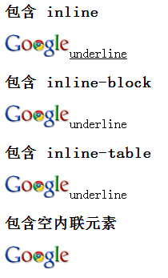
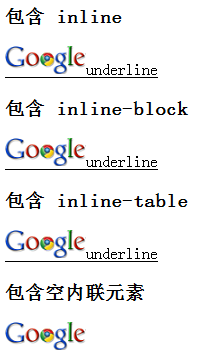
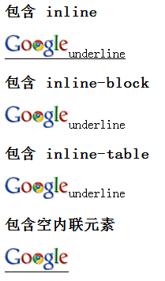
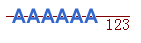

用于修饰文本的 'text-decoration' 是很常用的 CSS 特性，经常用于超链接的效果展示，其最常用的4个特性值为：
对于 'text-decoration'，W3C CSS 2.1第16.3.1节中还有如下叙述：
Underlines, overlines, and line-throughs are applied only to text (including white space, letter
spacing, and word spacing): margins, borders, and padding are skipped. If an element contains no text,
user agents must refrain from rendering these text decorations on the element. For example, images will
not be underlined.
此外规范中还提到：
When specified on an inline element, it affects all the boxes generated by that element; for all other
elements, the decorations are propageted to an anonymous inline box that wraps all the in-flow inline
chirdren of the element, and to any block-level in-flow descendants.
总结一下 W3C 中规范的内容就是：
如果 'text-decoration' 特性指定给一个块级元素，它会影响该元素所有的行内级后代。如果它指定给（或影响）一个行内元素，它会影响该元素产生的所有框（Box）。'text-decoration'
的 'underline'、'overline' 及 'line-through' 仅作用于文本。如果该元素没有内容或没有文本内容（例如 HTML 中的 IMG 元素），UA 必须忽略该属性。
IE Opera Firefox(Q) Chrome(Q) Safari(Q) 均不会将 'text-decoration' 作用于 IMG 元素上，而 Firefox(S) Chrome(S) Safari(S) 中在某些条件下， 对父元素设置的 'text-decoration' 特性会应用到 IMG 元素上。
只有部分浏览器在特定条件下会将 'text-decoration' 作用于 IMG 元素上，导致各浏览器表现不一致。
| Firefox(S) Chrome(S) Safari(S) |
|---|
Firefox(S) 中与一组非空的行内级元素（inline、inline-block 或 inline-table）紧密相邻的 IMG 元素会应用父元素设置的 'text-decoration' 特性， 而 Chrome(S) Safari(S) 中则是当 IMG 元素与 'inline' 元素（可以是内容为空或者只有空格的非匿名元素）紧密相邻时，会应用父元素设置的 'text-decoration' 特性。 这里以下划线做测试，上划线和删除线表现与下划线表现一致。
分析以下代码：
<!doctype html> <html> <head> <meta http-equiv="Content-Type" content="text/html;
charset=utf-8" /> <style type="text/css"> span { text-decoration : underline; } </style>
</head> <body> <h3>包含 inline</h3> <span><img src="gchrome.png"
/>underline</span> <h3>包含 inline-block</h3> <span><img src="gchrome.png"
/><div style="display : inline-block;">underline</div></span> <h3>包含
inline-table</h3> <span><img src="gchrome.png" /><div style="display :
inline-table;">underline</div></span> <h3>包含空内联元素</h3> <span><img
src="gchrome.png" /><a></a></span> </body> </html>
各浏览器中表现如下：1
| IE Opera Firefox(Q) Chrome(Q) Safari(Q) | Firefox(S) | Chrome(S) Safari(S) |
|---|---|---|
|  |  |  |
注1：该测试突出的是在各浏览器下是否在 IMG 元素上应用了 'text-decoration'，忽略其它方面的差异。
需要注意的是只有当 IMG 元素与同级元素处于同一个 line-box 里，即两者都为内联元素（display 特性值为 inline、inline-block 或 inline-table）的时候，才会出现上述问题。经测试上划线和删除线也存在同样问题，有时上划线可能会被图片遮盖，但它仍是存在的，用透明图片测试可证明：

尽量给需要修饰的文本单独设置 'text-decoration' 特性；若需要给图片添加上划线或下划线，则使用 'border-top' 和 'border-bottom' 来模拟 'text-decoration'。
此现象需要具体问题具体分析，如测试样例的代码，若要在此基础上去掉图片的下划线，可以考虑为 IMG 添加边白并调整相对位置以遮挡行框上的下划线，例如 img {padding-bottom:3px; background:white; position:relative; top:3px;}。
| 操作系统版本: | Windows 7 Ultimate build 7600 |
|---|---|
| 浏览器版本: |
IE6
IE7 IE8 Firefox 3.6.8 Chrome 6.0.495.0 dev Safari 5.0.1 Opera 10.61 |
| 测试页面: |
text-decoration_s.html
text-decoration_q.html |
| 本文更新时间: | 2010-08-19 |
text-decoration inline IMG 文本修饰 图片 内联元素